声明式 UI 与 MVVM
以上是对 SwiftUI 基础内容的介绍。在你将来学习更加高级的内容之前，有必要对 SwiftUI 的 UI 构建作一个概念上的总览。我们将讨论两个核心概念：声明式 UI，以及 MVVM 架构。
声明式 UI¶
我们先来看两段代码。
一段使用 SwiftUI：
1 2 3 | |
另一段使用 UIKit：
1 2 3 4 | |
它们都创建了一个带有一定样式的文本 UI。然而，它们的构建方式有着本质上的不同。对于 SwiftUI，我们描述 Text 及其字体、颜色等各种样式，而对于 UIKit，我们通过设定属性值来更改。前者称为「声明式」（declarative），而后者称为「命令式」（imperative）。
你可以从这两个词中体会到两种不同代码的显著区别。在 SwiftUI 中，我们不会使用“命令”语句来告诉一个 View “怎么做”，而是通过“声明”一个 View 以及它的结构、特征来告诉这个 View “做成怎样”。
当 UI 的状态需要随着状态的变化而更新时，二者的优劣变得非常明显。命令式 UI 构建需要在每次状态更新时都通过一定的逻辑更新所有关联的 UI，而声明式 UI 构建只需要在一开始将所有可能的 UI 状态描述出来，就可以形成状态到 UI 的一个映射。
这两种方式的复杂程度差别有多大？作个简单的计算：假如我们的 UI 有 10 种可能的状态，那么命令式 UI 最多需要根据 \dbinom{10}{2} = 45 种不同的状态转移定义来定义 UI 更新函数，而声明式 UI 最多不过需要定义 10 种不同状态下的 UI。更糟糕的是，一旦命令式 UI 的某一步 UI 更新出现问题，那么很可能接下来的更新都会导致错误的 UI。因此，当状态复杂到一定程度的时候，命令式 UI 的正确更新变得几乎不可能（回想一下你之前写过的命令式 UI，比如贵系同学们用 Qt 写过的大作业）。
声明式 UI 的这种特征决定了它有很多与命令式 UI 不同的性质：
- 没有对 UI 的引用。声明式 UI 只是一种对“UI 是怎样的”的描述，它对 UI 本身没有掌控。
- 由状态唯一确定，且只能通过修改状态更新 UI。
- 只是对 UI 的描述，并不是真实的 UI。
实际上，SwiftUI 底层是 UIKit，SwiftUI 其实是通过某种方式将 UIKit 中复杂的的 UI 更新简化为状态到 UI 的简单映射。
关于 View 的计算与 UI 更新
我们知道，每次状态更新时，View 中的 body 都会被重新计算以获得最新的 UI。你可能会对这种方式的性能问题产生担忧。实际上，SwiftUI 的 UI 更新是十分高效的。
请谨记，View 并不是真实的 UI，只是一种描述。SwiftUI 底层通过某种机制，能够比较更新前后两个描述的区别，然后只更新描述中变化了的 UI。
MVVM 架构¶
我们之前通过 @State 和 @Binding 简单介绍了 SwiftUI 中数据和 UI 的交互。我们把 view 所依赖的数据及与数据相关的逻辑称为 model，那么：
- 数据由 model 绑定到 view
- view 拥有 model，并能进行修改

然而，现实情况远比我们在前一节中“记录点击次数”的情况复杂。比如，我们的数据储存在数据库中，需要复杂的操作取出来，而且取出来的数据并不一定是 view 能够直接使用的，可能要经过一定的转换。这时，如果继续使用上面的架构，view 的负担就过于沉重了，这与 view 的定位相违背：view 应该只需要知道如何展示数据、与用户交互。
而且，view 只能持有仅与 UI 相关的状态，不能持有外部数据。理由之一是：外部数据可能需要在不同 view 之间共享，而如果由值类型的 view 存储显然无法完成。
因此，我们需要在中间加上一层：view model。

其中，view model 负责：
- 持有 model，根据 view 的命令修改 model
- 监听 model 变化，在变化时通知 view
- 将 model 的数据转化为 view 能够直接使用的数据
View 负责：
- 将“需要做什么”发送给 view model（如，用户输入信息后，让 view model 存入数据库）
- 监听 view model 通知，并根据 view model 提供的数据更新界面
请注意，在这个架构中，数据是严格单向流动的。
在 SwiftUI 中，MVVM 架构通常通过 ObservableObject 和 @ObservedObject 完成。具体来说：
- View model 为了能够将 model 已经变化了的消息“通知” view，需要继承
ObservableObject类（因此必须是class） - View model 的成员变量可以加上
@Published，表示这个变量变化时通知 view - View 中对 view model 加上
@ObservedObject，表示监听 view model 发出的信号
下面是一个最简单的例子：
1 2 3 4 5 6 7 8 9 10 11 12 13 14 15 16 | |
限于篇幅，有关 MVVM 架构的实践请参考 CS193p 课程有关 MVVM 的介绍。
再谈 @State
前面提到，View 只能持有仅与 UI 相关的状态。也就是说，在 View 中，@State 包装的值不能与外部数据相关。
什么是仅与 UI 相关的状态？一个简单的例子是：Button 在用户按下时会有透明度的变化，这里记录按压的状态和透明度的值就属于“仅与 UI 相关的状态”。
实践中一个简单的判断方法是：如果一个 @State 不能标记成 private，即外部需要访问这个数据，那么它就不仅与 UI 相关，这时不能用 @State 来储存，需要借助 view model。